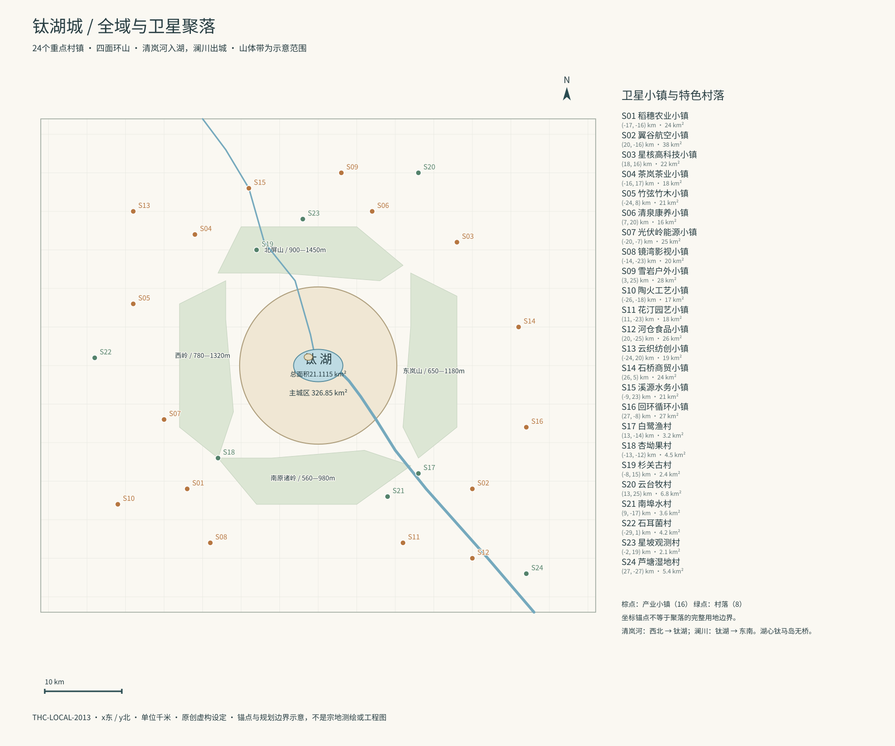
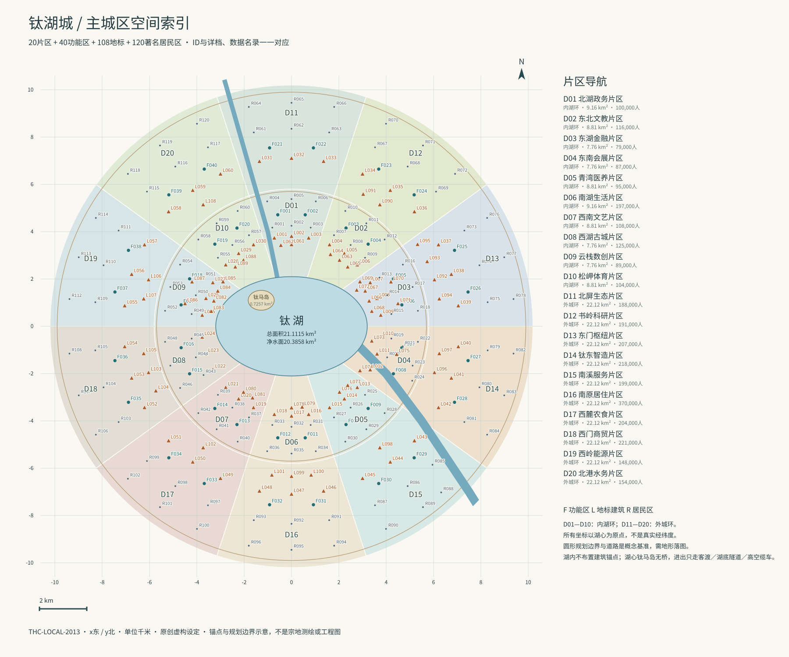
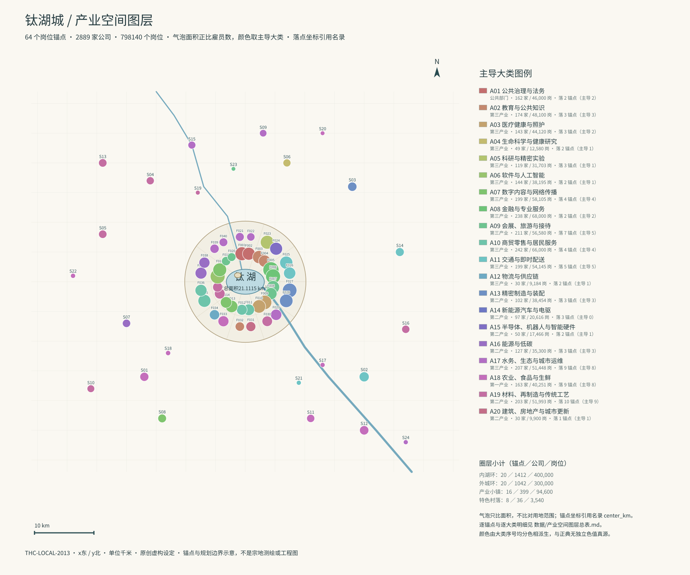

MAPS · THC-LOCAL-2013
地图
三张按正典坐标画的图：湖心为原点 (0,0)，单位千米，x 向东、y 向北，方位角自北顺时针。都是 SVG 矢量图，放大器不会糊，窗口多宽就铺多宽。
全域卫星与聚落

主城区空间索引

产业空间图层

怎么用这三张图 口径
先看全域
搞清湖、环山与 24 个外围聚落的关系，再决定故事发生在城里还是山外台地。
再定位片区
主城区图按 D／F／L 编号标位：一个片区、一条街、一栋楼都能指到图上。
产业看第三张
产业小镇与功能区叠在一张图上，货运通道与班车动线就在那一层。
坐标能算
任意两点距离与朝向都能用中心坐标直接算，不必目测；正典口径见 CANON.md。